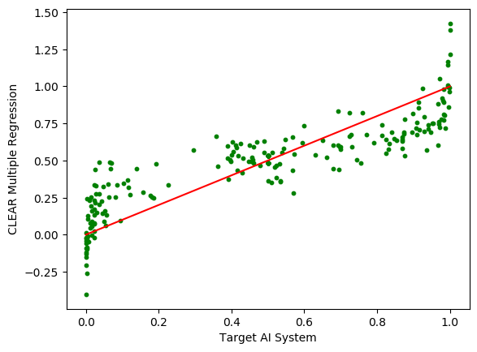

prediction = 0.52 - 0.045 (smooth*conPts) - 0.098 (area*concavity) + 0.11 radius + 0.044 texture2 - 0.069 smooth2 + 0.28 conPts + 0.13 area + 0.12 smooth - 0.14 (texture*fractal) + 0.085 perimeter + 0.15 concavity + 0.041 radius2 + 0.078 (smooth*concavity) + 0.056 (radius*area)
Regression for Neighbourhood of Observation 1
 Quality of regression statistic:
Adjusted R-Squared =
0.91
"b-counterfactual value" = numeric value needed to be at the decision boundary
"actual b-counterfactual value" determined by carrying out a grid search on the target AI system.
| feature | input value | actual b-counterfactual value | regression estimated b-counterfactual value | b-counterfactual fidelity error |
|---|---|---|---|---|
| radius | -0.2 | 2.5 | 2.4 | 0.12 |
| area | -0.26 | 2.4 | 2.2 | 0.17 |
| conPts | -0.75 | 0.66 | 0.71 | 0.049 |
"c-counterfactual value" = categorical value that flips the observation's classification
"actual c-counterfactual value" determined by running target AI system with c-counterfactual.
| feature | input value | c-counterfactual value | actual c-counterfactual value | regression forecast using c-counterfactual | regression forecast error |
|---|
| Feature | radius | texture | perimeter | area | smooth | compact | concavity | conPts | symmetry | fractal |
|---|---|---|---|---|---|---|---|---|---|---|
| -0.2 | 0.5 | -0.24 | -0.26 | -1.04 | -0.84 | -0.73 | -0.75 | -0.12 | -0.95 |
['area', 'concavity', 'conPts', 'fractal', 'perimeter', 'radius', 'smooth', 'texture']
[0.7794736312568046, 0.19108189231290656, -0.1984077357379383, 0.2465543081710094, 1.0886028152174316, -0.7470792971194694, -0.26243061159888914, -1.0433613061722347, -0.47389203643451355, -0.24399986637696372, -0.728123488143086, 0.03936562960065556, 0.7596958736436539, 0.05206826343565792]
[-0.045353308457360776, -0.09765183814499272, 0.11384832347993212, 0.044280897256222224, -0.06855417867659695, 0.2798056815269829, 0.1326067524967997, 0.1166112080437307, -0.14024268271004886, 0.08458696042551898, 0.14509866228952695, 0.040841153022487024, 0.07808012940155235, 0.055971934508095345]
0.5244304134861327
multiple